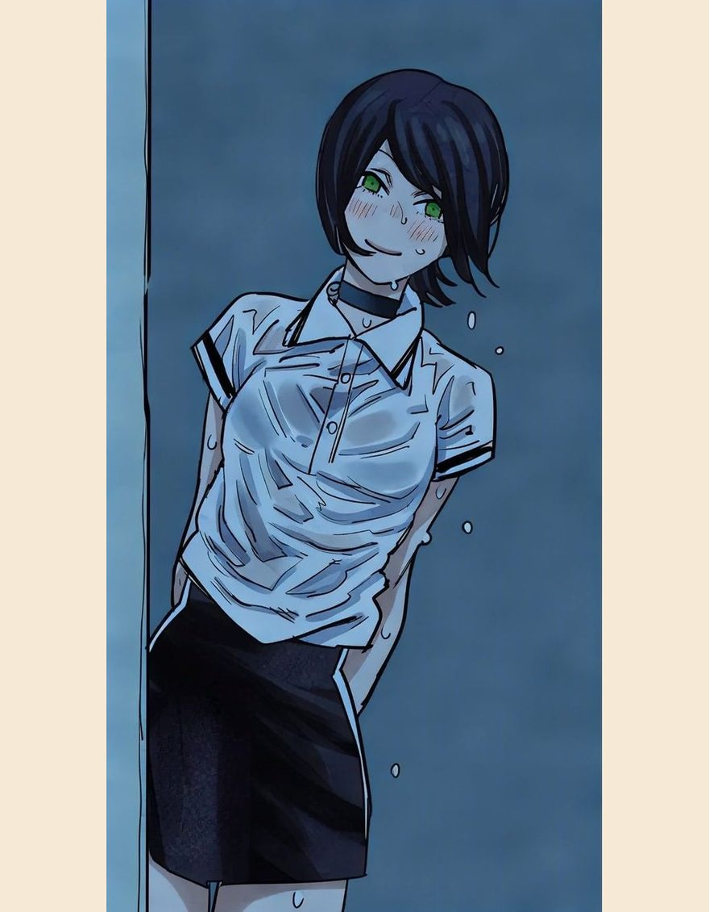

Daily Briefing · 12 Items
📰 World Model 每日简报
西湖大学发布概念世界模型 Awomo-0.5：40 亿参数，6 项评测登顶；百度首次披露 Apollo World。另有 10 篇世界模型新论文。
- 2026-11-20世界模型日报 · 2026年11月20日
- 2026-11-19世界模型日报 · 2026年11月19日
- 2026-11-18世界模型日报 · 2026年11月18日
- 2026-11-17世界模型日报 · 2026年11月17日
- 2026-11-16世界模型日报 · 2026年11月16日
- 2026-11-15世界模型日报 · 2026年11月15日

Paper Deep Read · Day 5
📄 Interactive World Model 论文精读
DreamerV2：离散隐状态，想象中学 Atari — 把世界模型的隐状态换成离散分类变量、并用 KL balancing 让先验学得更快，通用图像世界模型在单 GPU、200M 帧内仅靠想象达到 Atari 人类水平。
- 2026-11-19第 5 篇 · DreamerV2：Mastering Atari with Discrete World Models — Hafner et al., 2021
- 2026-11-18第 4 篇 · MuZero：Mastering Atari, Go, Chess and Shogi by Planning with a Learned Model — Schrittwieser et al., 2019
- 2026-11-17第 3 篇 · Dreamer：Learning Behaviors by Latent Imagination — Hafner et al., 2020
- 2026-11-16第 2 篇 · PlaNet：Learning Latent Dynamics for Planning from Pixels — Hafner et al., 2019
- 2026-11-15第 1 篇 · World Models — Ha & Schmidhuber, 2018
RL Lesson · Lesson 5
🤖 RL 算法每日精讲
Q-Learning — 用下一状态最大动作值自举更新当前值，无模型学最优策略。含 13 步 LaTeX 推导、可运行的 Q-Learning Python 代码、3 道练习题附参考答案，课首有 7 分 31 秒讲解视频。
- 2026-11-19第 5 课 · Q-Learning
- 2026-11-18第 4 课 · 时序差分 TD 学习
- 2026-11-17第 3 课 · Monte Carlo 方法
- 2026-11-16第 2 课 · 动态规划：策略迭代与值迭代
- 2026-11-15第 1 课 · MDP 与 Bellman 方程
